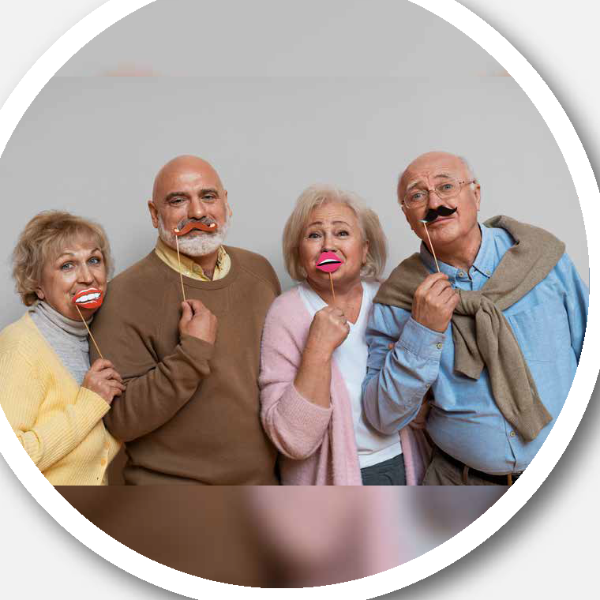

Dimensiones e indicadores clave en la valoración
Instrucción:Haz clic en cada número para obtener más información.

La dimensión social considera los lazos, relaciones y redes de apoyo de la persona mayor. Incluye la convivencia, la calidad de las relaciones, la participación comunitaria y el acceso a recursos sociales.
Contar con vínculos de apoyo contribuye al bienestar y ayuda a detectar situaciones de aislamiento, exclusión o abuso.
La dimensión psicológica aborda el estado emocional y cognitivo, y su relación con el bienestar y la capacidad para afrontar los cambios asociados al envejecimiento.
Se consideran aspectos como el ánimo, la autoestima, la motivación, la memoria, la orientación y las funciones ejecutivas.
Dato clave: La valoración oportuna ayuda a identificar necesidades de apoyo emocional y cognitivo.
La dimensión biológica revisa la salud física, las condiciones de movilidad y las necesidades de cuidado de la persona.
La valoración puede considerar enfermedades, tratamientos, nutrición, sueño, actividad física y capacidad para realizar las actividades cotidianas.
La dimensión económica observa los ingresos, recursos y gastos disponibles para cubrir las necesidades y mantener la autonomía.
También permite identificar barreras económicas para acceder a alimentación, vivienda, servicios de salud y participación social.
La dimensión espiritual reconoce los valores, creencias, prácticas y fuentes de sentido que son importantes para cada persona.
Su valoración debe ser respetuosa de la diversidad y puede ayudar a reconocer recursos personales que favorecen el bienestar.
La valoración del entorno físico y la vivienda revisa si el hogar es seguro, accesible y adecuado para las necesidades de la persona.
Se pueden observar obstáculos, iluminación, servicios básicos y disponibilidad de apoyos para prevenir accidentes y facilitar la vida diaria.
El entorno familiar permite conocer la convivencia, los vínculos y los apoyos disponibles en la familia o en la red cercana.
También es importante reconocer las necesidades de quienes brindan cuidado y promover relaciones basadas en el respeto y la corresponsabilidad.